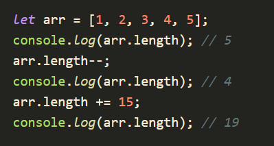
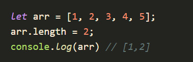
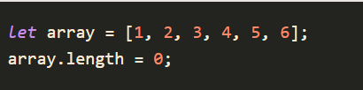

Mảng (Array) là một nơi cho phép chúng ta lưu trữ nhiều giá trị theo thứ tự nhất định trong một biến duy nhất.
Nó có thể chứa nhiều giá trị với kiểu dữ liệu khác nhau như là chuỗi, số, đối tượng... và chiều dài của mảng có thể tự động tăng lên hay giảm xuống khi chúng ta thực hiện thêm hay xóa các phần tử trong mảng.
Vị trí của các phần tử trong mảng sẽ bắt đầu từ số 0
Khi bạn lấy thông tin từ một mảng, bạn sử dụng index của từng thành phần trong mảng. Mảng trong JavaScript là 0-indexed, nghĩa là các phần tử trong mảng được đánh dấu từ 0 thay vì 1.
var book = ['foreword', 'boyWhoLived', 'vanishingGlass', 'lettersFromNoOne', 'afterword'];
Object được sử dụng khi bạn muốn sắp xếp dữ liệu dựa vào tên của chúng
Bạn nên sử dụng các đối tượng khi bạn muốn tên phần tử là chuỗi (văn bản).
Bạn nên sử dụng mảng khi muốn tên phần tử là số.
length là một thuộc tính được tính bằng số index lớn nhất +1, nó sẽ cập nhật khi chúng ta thay đổi nội dung array. Việc thay đổi kích cỡ array tức là bổ sung, gộp, hoặc loại bỏ phần tử bên trong array.
length là một giá trị có thể “ghi” được. Khi ta giảm giá trị length thì array bị “xén” đi.
muốn làm rỗng array thì chỉ cần đặt length = 0
Các phần tử trong mảng được truy cập thông qua chỉ số (index)
Chỉ số của mảng bắt đầu từ 0, kết thúc ở arr.length - 1
Thông thường, chúng ta truy cập vào phần tử mảng để:
cú pháp: array.push(giá trị của phần tử mà bạn muốn thêm vào cuối mảng)
var mobile = ["HTC", "Nokia", "SamSung", "LG", "Apple"]; document.getElementById("demo1").innerHTML = mobile; mobile.push("Lenovo"); document.getElementById("demo2").innerHTML = mobile;
array.unshift(giá trị của phần tử mà bạn muốn thêm vào đầu mảng)
var mobile = ["HTC", "Nokia", "SamSung", "LG", "Apple"]; document.getElementById("demo1").innerHTML = mobile; mobile.unshift("Lenovo"); document.getElementById("demo2").innerHTML = mobile;
array.shift()
var mobile = ["HTC", "Nokia", "SamSung", "LG", "Apple"]; document.getElementById("demo1").innerHTML = mobile; mobile.shift(); document.getElementById("demo2").innerHTML = mobile;
Cú pháp: array.pop()
var mobile = ["HTC", "Nokia", "SamSung", "LG", "Apple"]; document.getElementById("demo1").innerHTML = mobile; mobile.pop(); document.getElementById("demo2").innerHTML = mobile;
phương thức splice() để xóa phần tử mảng thì ta sử dụng cú pháp như sau:
array.splice(start, length)
var data = ["HTC", "Nokia", "Apple", "LG", "Honda", "SYM", "Suzuki"]; data.splice(1,4); document.write(data);
Nếu ta bỏ trống tham số "length" thì phương thức splice() sẽ xóa tất cả những phần tử bắt đầu từ phần tử có chỉ số là start cho đến hết mảng.
phương thức splice() để thêm phần tử mới vào mảng thì ta sử dụng cú pháp như sau:
array.splice(start, 0, phần tử mới 1, phần tử mới 2, phần tử mới 3, ....)
var mobile = ["HTC", "Nokia", "SamSung", "LG", "Apple"]; mobile.splice(2, 0, " a ", " b ", " c ", " d "); document.write(mobile);
Nếu ta thay giá trị của tham số 0 thành một số khác thì phương thức splice() ngoài việc thêm phần tử mới vào mảng, nó còn xóa đi những phần tử nằm phía sau phần tử có chỉ số là start với số lượng phần tử bị xóa sẽ bằng với giá trị của tham số này.
var mobile = ["HTC", "Nokia", "SamSung", "LG", "Apple"]; mobile.splice(1, 3, " a ", " b ", " c ", " d "); document.write(mobile);
thay thế nội dung của nó bằng cách sử dụng một phép gán
Phương thức fill() điền (sửa đổi) tất cả các phần tử của một mảng từ một chỉ mục bắt đầu (số không mặc định) đến một chỉ mục kết thúc (độ dài mảng mặc định) với một giá trị tĩnh
Cú pháp: arr.fill(value[, start[, end]])Với:
const items = ['a', 'b', 'c', 'd', 'e', 'f'] console.log(items.fill('--NEW-ITEM--', 2, 3))
//[ 'a', 'b', '--NEW-ITEM--', 'd', 'e', 'f' ]
Phương thức concat() được dùng để ghép các mảng con lại với nhau rồi trả về một mảng mới.
Cú pháp: var tên mảng = array1.concat(array2, array3, ...., arrayN);
Phương thức slice() được dùng để trích xuất một phần của mảng ban đầu rồi trả về một mảng mới.
Cú pháp: var tên mảng = array.slice(start, end);
var data = ["HTC", "Nokia", "Apple", "LG", "Honda", "SYM", "Suzuki"]; var abc = data.slice(1,5); document.write(abc);
Kết hợp index với vòng lặp for và thuộc tính length để chỉ định số vòng lặp, chúng ta có thể truy cập lần lượt tới các phần tử trong mảng và qua đó thực hiện việc duyệt mảng trong JavaScript
for … of cũng được sử dụng để duyệt qua các giá trị của mảng
[array].forEach(function(value, index) { // Code thực thi })
let pref = ["Ha Noi", "Thanh Hoa", "Nam Dinh"]; pref.forEach(function(element){ console.log(element); });